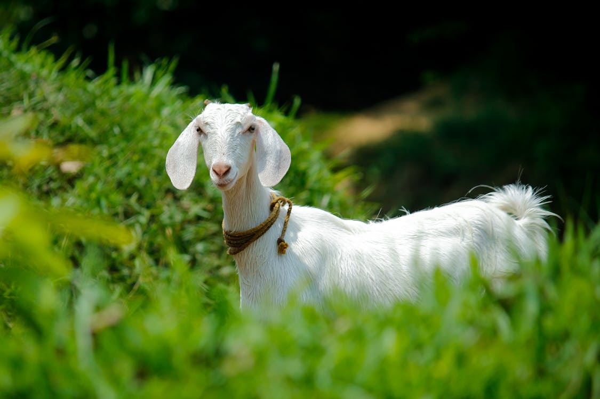

Goat
Origin and Habitat:
Goats are domesticated animals that belong to the species Capra aegagrus hircus. They were one of the first animals to be domesticated by humans around 10,000 years ago in the Near East. Today, goats are found worldwide and thrive in a variety of environments, from mountainous regions to agricultural lands.
Physical Traits:
Goats are known for their agility and ability to climb steep terrain. They have cloven hooves, a sturdy build, and typically sport a pair of horns. Their coat can vary widely in color and texture depending on the breed, and they possess a beard and scent glands that are more prominent in males.
Behavior:
Goats are social animals that prefer to live in herds. They are known for their curious and intelligent nature, often exploring their environment and interacting with other goats. Goats are herbivores, feeding on a variety of vegetation including grasses, leaves, and shrubs.
Lifespan:
Goats typically live for 10 to 15 years, although some can live longer with proper care. Their lifespan can be influenced by factors such as diet, environment, and overall health management.